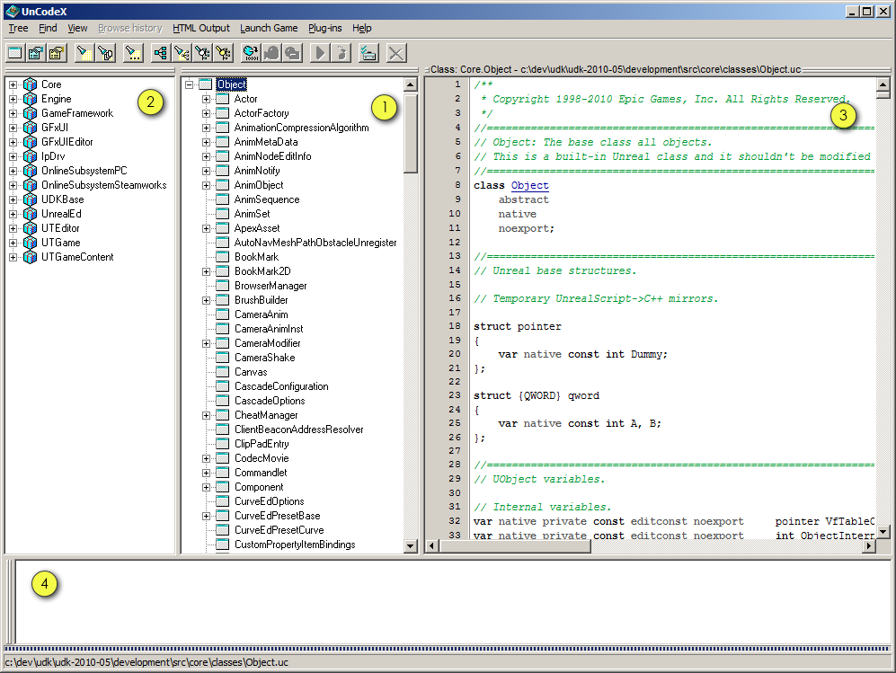
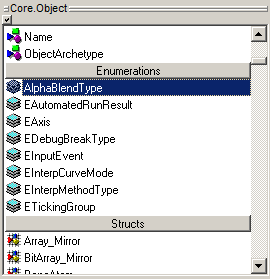

UDN
Search public documentation:
UnCodeXJP
English Translation
中国翻译
한국어
Interested in the Unreal Engine?
Visit the Unreal Technology site.
Looking for jobs and company info?
Check out the Epic games site.
Questions about support via UDN?
Contact the UDN Staff
中国翻译
한국어
Interested in the Unreal Engine?
Visit the Unreal Technology site.
Looking for jobs and company info?
Check out the Epic games site.
Questions about support via UDN?
Contact the UDN Staff
UE3 ホーム > UnrealScript > UnCodeX
UnCodeX
概要
インストール
- UnCodeXの最新バージョンを、project pageから入手します。
- インストーラを実行し、次の手順に従います。
- UnCodeXを初めて起動する場合は、設定を変更するように促されます。[yes]を押して、[program settings]（プログラムの設定）ウィンドウを開きます。
- 唯一必要な設定は、Source Paths（ソースパス）の設定です。
- [add]（追加）ボタンを押し、含めたい「UnrealScript」コードが入っているフォルダを選択します。
- UDKのためには、
c:\UDK\Development\Srcに進まなければなりません。 - [ok]ボタンを押して、設定ウィンドウを閉じます。
- この時点で、UnCodeXによってスキャンおよび解析を行うように促されます。
- [yes]を押し、スキャンと解析を開始します。
- このプロセスは、ソースファイルの量とコンピュータの動作速度によっては、時間がかかる場合があります。
- 構成上の変更（新たなパッケージの追加など）をする場合は、リビルドしてツリーを解析します。これは、メニューのTree > Rebuild & Analyse (Ctrl+B)から実行できます。
- これで、UnCodeXが使えるようになりました。
使用方法
メインウィンドウ
下のスクリーンショットは、デフォルトの設定によるメインウィンドウです。
- クラスのツリーです。全クラスの継承が示されています。ユーザーインターフェースのメインとなる部分で、唯一、場所を変えたり無効にすることができない部分です。ツリーを右クリックすると、付加的な機能が表示されます。
- パッケージのツリーです。各種パッケージおよびパッケージに含まれているクラスが表示されます。この2つのツリーは、選択したクラスを基にして、Ctrl+Tabで簡単に切り替えることができます。
- ソースのプレビューです。ここで示されているのは、読み取り専用で、選択されたクラスのソースコードを文法的に強調表示したバージョンです。既知の「UnrealScript」のクラス上でクリックすることによって、そのクラスのソースコードを表示できます。
- ログです。ここには、さまざまな情報が報告されます。たとえば、ソースコード解析中見つかるエラーと警告やプログラムエラーです。また、それだけではなく、テキスト検索をフルに行った結果を表示するためにも使用できます。

検索
UnCodeXでは、「UnrealScript」のコードを検索する方法が複数あります。 ツリーのどちらか（クラスツリーまたはパッケージツリー）にフォーカスがある場合、タイプを開始することができます。それによって、自動的に、タイプした文字から始まる次のクラス（またはパッケージ）が検索されます。 検索は、現在選択されているエレメントから開始されます。 [Find]（検索） > [Find Next]（次を検索） （F3）を使用することによって、入力した文字で始まる次のエレメントを検索することができます。（アプリケーションのステータスバーを参照してください） エスケープキーを押すことによって、インライン検索を中止できます。 また、[Find Class]（クラスの検索）ダイアログを[Find]（検索）メニューの中から（またはCtr+Fで）開くことによって、クラスを探すことができます。 3番目の検索機能は、いわゆる「フルテキスト」検索です（Ctrl+T）。 フルテキスト検索によって、すべてのソースファイルからテキストを検索することが可能になります。 フルテキスト検索では、一般的な表現が使えます。（基本的で一般的な表現機能しか使えません）。 また、検索するソースファイルの範囲を絞ることができます。これによって、ソースコードの階層サブセットだけを検索できるようになります。 フルテキスト検索の結果は、ログウィンドウに表示されます。 結果をクリックすると、ソースプレビュー内の所定の位置でソースファイルが開かれます。結果をダブルクリックした場合は、設定されているエディタ内で開きます。
ゲームの起動
[Launch game]（ゲームの起動）メニューを通して、クライアントまたはサーバーによるゲームのインスタンスを開始することができます。 [Run server]（サーバーの起動）と[Join server]（サーバーへの参加）という2つのオプションは、設定メニューを通じて設定することができます。 [Launch game]（ゲームの起動）メニュー内の [Run ... (Ctrl+X)]（実行）オプションには、ゲームのさまざまなインスタンスを起動させるオプションが揃っています。 これは、基本的には、コマンドラインを設定し実行するためのGUIです。 プリセットを作成することもできます。 #トラブルシューティングトラブルシューティング
ソースコードの解析
ソースコード解析の実行中に、次のような警告やエラーが表示される場合があります。- Discarding token（トークンを破棄します）
- このメッセージは無視して構いません。ソースコードのパーサーが、予期していない文字に遭遇する場合がありますが、無視しても大丈夫です。
- Empty package（パッケージが空です）
- UnCodeXが、ソースパスのいずれかで、「UnrealScript」パッケージに類似するデイレクトリを発見したが、そこにクラスがまったくない場合。後で実際にクラスをこのパッケージに追加するときに、ツリーをリビルドする必要があります｡
- Orphan detected（孤児が検出されました）
- 指摘されているクラスは、現存のクラスツリーには存在しないクラスを拡張したものです。原因は、プログラム上のエラーを犯したか、このクラスをもつパッケージが存在するソースパスを含めるのを忘れたかのどちらかです。
- Unhandled exception in class ... （クラスに未処理の例外があります）
- ソースコード解析中にこのようなエラーが起きるのは、大抵ソースコードに深刻なエラーがある場合です。このようなエラーには、よく履歴リストが続きます。履歴の中の最終エントリーでは、どの行からエラーが始まったのかについて表示されます。ただし、エラーを発見する最良の方法は、コードをコンパイルしてみることです。その他の機会にこのようなエラーが出る場合は、プログラムにバグがあるためでしょう。